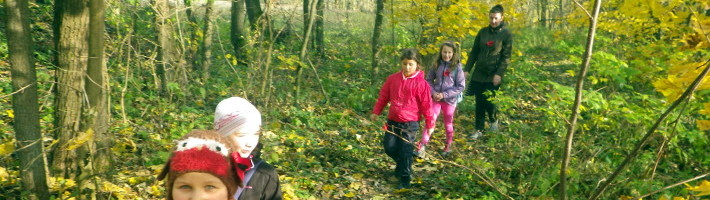
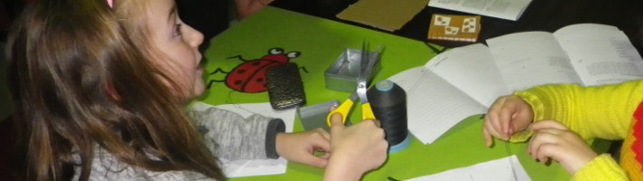
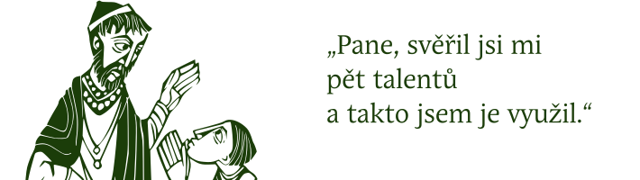

listopad 2017
so 11.11.14hpoutní mše sv. v kostele sv. Martina v Kněžicích

16hsetkání v Oáze

ne 19.11.9:30hmše sv. v Seči

prosinec 2017
so 16.12.17hadventní setkání v Oáze
ne 17.12.9:30hmše sv. v Seči
leden 2018
so 20.1.17hsetkání v Oáze
ne 21.1.9:30hmše sv. v Seči
únor 2018
so 17.2.17hsvatopostní setkání v Oáze
ne 18.2.9:30hmše sv. v Seči
březen 2018
so 3.3.17hsvatopostní setkání v Oáze
so 17.3.17hsvatopostní setkání v Oáze
ne 18.3.9:30hmše sv. v Seči
29.–31.3.
Velikonoce na Míčově
duben 2018
ne 15.4.9:30hmše sv. v Seči
květen 2018
so 19.5.17hsvatodušní setkání v Oáze
ne 20.5.9:30hmše sv. v Seči
červen 2018
ne 17.6.9:30hmše sv. v Seči